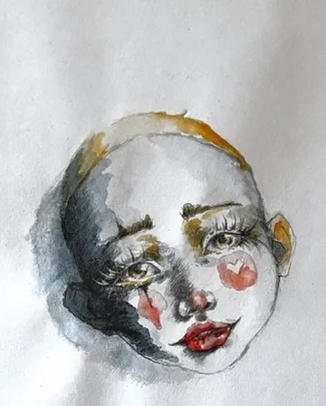

制作背景
水彩紙の上で、水と顔料が予想外の動きを見せる。コントロールしきれない滲みや境界線こそが、この技法の魅力であり挑戦です。
この作品では、タイトルに込めた感覚——「The circus is empty, but the paint never washes off.」——を画面の中でどう表現するかを模索しました。言葉にできない感情を、線と色に託しています。
プロセス
下描きを薄く入れた後、ウェット・オン・ウェットで大まかな色面を置き、乾いてからウェット・オン・ドライで細部を描き込みました。偶然生まれる色の混ざりを活かしながら、意図した表情に近づけていきます。

振り返り
完成後に改めて眺めると、制作中には気づかなかった表情が浮かび上がってきます。意図と偶然のあいだに生まれるものを、次の作品へのヒントとして受け取っています。